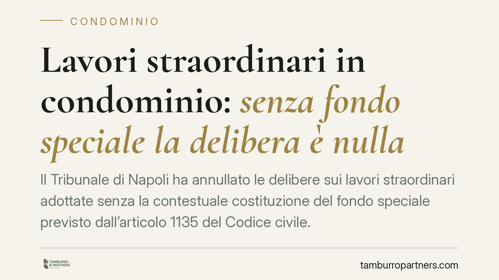

Lavori straordinari in condominio: senza fondo speciale la delibera è nulla
Il Tribunale di Napoli ha annullato le delibere sui lavori straordinari adottate senza la contestuale costituzione del fondo speciale previsto dall'articolo 1135 del Codice civile. La pronuncia ribadisce un principio spesso trascurato dalle assemblee: senza copertura finanziaria preventiva la decisione è viziata. Vediamo perché conta e come muoversi.

Il caso deciso a Napoli
Con la sentenza n. 8993/2026 il Tribunale di Napoli ha dichiarato la nullità di alcune delibere condominiali relative a lavori di manutenzione straordinaria. Il motivo non riguardava il merito delle opere, ma un difetto procedurale: l'assemblea aveva approvato gli interventi senza istituire, nello stesso momento, il fondo speciale destinato a coprirne il costo.
È un errore frequente. Molte assemblee approvano i lavori e rinviano a un secondo momento la raccolta delle somme. La pronuncia chiarisce che questa prassi non è ammessa: la copertura finanziaria deve essere deliberata contestualmente all'approvazione dell'opera.
Inquadramento normativo
Il riferimento è l'articolo 1135, primo comma, n. 4, del Codice civile. La norma stabilisce che l'assemblea provvede "alle opere di manutenzione straordinaria e alle innovazioni, costituendo obbligatoriamente un fondo speciale di importo pari all'ammontare dei lavori".
La disposizione prevede una sola eccezione: se l'esecuzione dei lavori avviene in base a un contratto che ne prevede il pagamento graduale in funzione del loro progressivo stato di avanzamento, il fondo speciale può essere costituito in relazione ai singoli pagamenti dovuti. Fuori da questa ipotesi, il fondo deve coprire l'intero importo delle opere fin dall'inizio.
Il "fondo speciale" è una dotazione economica vincolata: le somme raccolte non possono essere destinate ad altro. Serve a garantire che l'impresa edile venga pagata e che il condominio non avvii cantieri senza risorse. La ratio è tutelare sia i condomini sia i terzi che entrano in rapporto con l'ente.
Rilevante anche l'articolo 1129 del Codice civile, che disciplina i doveri dell'amministratore, tra cui la corretta gestione contabile e la trasparenza sulle movimentazioni di cassa. L'omessa costituzione del fondo può riflettersi anche sulla sua responsabilità gestoria.
Che tipo di vizio è
La distinzione tra delibera nulla e delibera annullabile non è teorica. La delibera annullabile va impugnata entro trenta giorni; decorso il termine, diventa definitiva. La delibera nulla, invece, può essere fatta valere senza limiti di tempo da chiunque vi abbia interesse.
L'orientamento che riconduce alla nullità la mancata costituzione del fondo colloca il vizio nell'area più grave: la decisione non consolida i propri effetti con il semplice decorrere dei termini. È un dato che incide sulla stabilità dell'intera operazione, anche a distanza di tempo.
Implicazioni pratiche
Per i condomini la conseguenza è concreta: una delibera priva del fondo speciale è esposta a impugnazione e non offre una base solida per procedere. Chi ha già votato a favore può comunque avere interesse a rilevare il vizio, perché un cantiere avviato su una delibera instabile genera incertezza sui pagamenti e sui rapporti con l'impresa.
Per l'amministratore il tema è ancora più delicato. Portare in approvazione lavori senza prevedere la copertura finanziaria significa esporre il condominio a un contenzioso e sé stesso a possibili contestazioni sulla diligenza gestoria.
Per l'impresa edile il rischio è operare in base a un titolo che potrebbe essere caducato, con difficoltà nel recupero del corrispettivo.
Cosa fare in concreto
- Verificate l'ordine del giorno: l'approvazione dei lavori e la costituzione del fondo devono figurare come punti collegati e votati nella stessa assemblea.
- Controllate l'importo del fondo: deve essere pari all'ammontare complessivo delle opere, salvo il caso del pagamento per stati di avanzamento previsto dal contratto.
- Documentate il contratto con l'impresa: se intendete avvalervi dell'eccezione, il contratto deve prevedere espressamente il pagamento graduale.
- Amministratori, redigete un verbale chiaro: indicate importo, modalità di raccolta e vincolo di destinazione delle somme.
- In caso di dubbi su una delibera già adottata, fate valutare la posizione prima di avviare il cantiere, non dopo.
Conclusione
La sentenza non introduce una regola nuova, ma ricorda che un adempimento formale ha effetti sostanziali. Il fondo speciale non è una formalità burocratica: è la condizione che rende la decisione stabile e opponibile. Trascurarlo significa costruire su fondamenta fragili.
---
*Contributo informativo a cura di Tamburro & Partners - Avv. Giuseppe Tamburro. Non costituisce parere legale.*
Ogni condominio ha una storia a sé.
Se gestisci un'amministrazione e vuoi un confronto su una specifica questione condominiale, scrivi allo studio. Ti rispondiamo entro un giorno lavorativo.